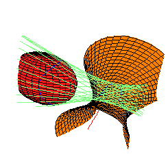
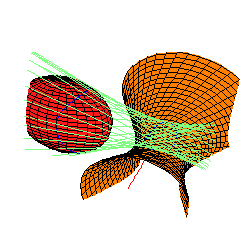

| Two Questions |
|
3 |
I will describe some interesting symbolic computations in the following problems:
Consider k lines and 4-k spheres in R3.
| I. |
When the given lines and spheres are general, how many lines are there
that meet the fixed lines and are tangent to the spheres.
Call these common tangents and
transversals. |
| II. | For which arrangements of lines and spheres are there infinitely many common tangents and transversals? |
 
